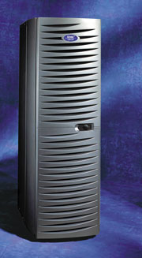
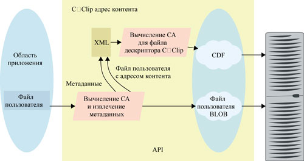
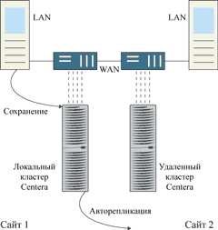
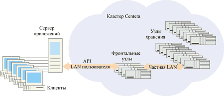
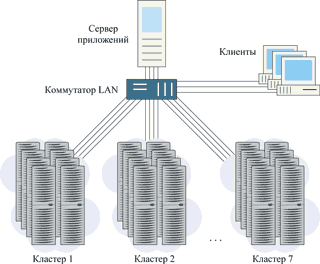

Анатолий Журкин
Аналитики отмечают, что в числе данных, объемы которых растут особенно быстро, выделяется так называемый фиксированный контент (fixed content) - неизменяемое информационное наполнение. В это понятие включается любая оцифрованная информация, сохраненная для последующего использования, - PDF-документы, электронная почта, контрольные изображения, потоковое видео и аудио, рентгеновские снимки, чертежи САПР и т. п. По оценкам специалистов Enterprise Storage Group, к концу 2004 г. только на справочные файлы будет приходиться уже более половины всей информации, хранящейся в корпорациях и правительственных организациях.
Быстрое накопление фиксированного контента требует использования новой категории систем хранения, предназначенной для безопасного содержания и интерактивного поиска такой информации в течение многих лет. Выпустив новый сервер Centera (рис. 1), корпорация ЕМС (http://www.emc.com) одновременно ввела в лексикон специалистов новую аббревиатуру - CAS (Content Addressed Storage - система хранения, адресуемая по содержимому). Системы Centera CAS появились у EMC после приобретения ею в 2001 г. компании FilePool, специализирующейся на ПО хранения. Эти системы имеют много общего с архитектурой NAS. Они тоже строятся на базе Ethernet, обрабатывают и передают файлы непосредственно в прикладные программы. В последнее время аналогичные идеи выдвигали многие недавно образованные компании, а такие некоторые разработчики, предлагающие серверы для справочных данных и инструментальные средства разметки и идентификации информации.
|  | Рис. 1. Внешний вид системы Centera.
|
CAS-системы для хранения и поиска объектов и доступа к данным используют адрес фиксированного контента, а не имя файла или его физическое местоположение. Поскольку зачастую накопление подобной информации никак не ограничивается, CAS-система для хранения такой информации должна обеспечивать чрезвычайно простое масштабирование до петабайтных емкостей (1,024 Тбайт) при сохранении времени доступа в пределах секунды.
Система Centera Content Addressed Storage - специализированный аппаратно-программный комплекс, использующий накопители на жестких дисках. По словам разработчиков, Centera CAS способна надежно хранить сотни терабайт делового контента в течение месяцев, лет или даже десятилетий. Centera дополняет традиционные системы CLARiiON и Symmetrix, которые используются для решений, ориентированных на обработку транзакций и интенсивное обновление информации.
Традиционные системы дисковой памяти, использующие блочный или файловый тип доступа, хорошо подходят для построения систем емкостью в десятки терабайт, типичных для деловых и коллаборативных приложений. Но сегодня компаниям также требуется поддерживать большие, быстро растущие хранилища фиксированного контента с интерактивным сетевым доступом к нему для множества разнообразных клиентов. Становится все труднее управлять логикой размещения данных и масштабированием вместимости хранилищ, поддерживая при этом подлинность хранимого контента на протяжении всего срока хранения. По мнению специалистов EMC, одним из средств для решения проблемы может стать ПО CentraStar в сочетании с модульной дисковой архитектурой. Это решение способно обеспечить управление физическими ресурсами хранения данных, прозрачное как для пользователя, так и для приложений. Приложения управления контентом могут легко стыковаться со средствами системы Centera, обеспечивая эффективное масштабирование до петабайтных емкостей хранения.
Потребности в решениях Centera CASХранилища данных транзакций и приложения, основанные на технологиях реляционных баз данных, ежегодно растут на 30-50%, и этот взрыв объемов контента в некоторых секторах рынках ужесточает требования к вместимости систем хранения - она должна ежегодно увеличиваться на 100% и более. Потребность в системах типа CAS ощущается в различных сегментах вертикальных рынков. Здравоохранение В этой сфере важна эффективность совместного использования фиксированного контента (рентгенограммы, томограммы, результаты испытания лекарств). Centera позволяет легко сохранять и отыскивать информацию. Более быстрый доступ к справочной информации улучшает качество обслуживания пациентов. В 2000 г. в США было выполнено более 400 млн медицинских обследований. В каждом случае получается одно или несколько изображений, отличающихся по формату и объему - от 15 Mбайт для стандартной рентгенограммы до более 1 Гбайт для онкологических обследований. Поскольку рентгенограммы получают в отделении радиологии больницы, они немедленно оказываются доступны врачам, и этот оперативный доступ сохраняется в течение 60-90 дней. После выписки пациента потребность в оперативном доступе к его рентгенограммам становится намного меньше, однако существует требование, чтобы все результаты исследований хранились как минимум семь лет в их основном формате. После 90 дней больница может сохранить изображения на ленте или переслать их в удаленный архив для долговременного хранения. Стоимость поиска и выборки изображения из долговременного хранения может оказаться в 5-10 раз дороже, чем в случае оперативного доступа, а время восстановления часто может измеряться часами и днями. Поставщики решений в сфере хранения медицинских изображений предлагают больницам возможность просмотра результатов клинических исследований, таких, как рентгенограмма, с приемлемым временем отклика и разрешением, достаточным для быстрой оценки состояния пациента. По мнению специалистов, Centera обеспечивает эффективное и рентабельное решение для долговременного хранения и немедленного оперативного доступа к медицинским изображениям в пределах больницы или офиса клиники. Финансы Centera обеспечивает строгий регламент, целостность информации и возможность эффективного онлайнового доступа, позволяя сделать информацию источником дохода. В банке создаются контрольные изображения чеков, каждое объемом приблизительно 25 Кбайт, и они могут быть сохранены локально или посланы на проверку поставщику услуг по обработке изображений, который может обрабатывать 50-90 млн чеков в месяц. Обработка изображений чеков в системах обработки транзакций занимает обычно около пяти дней. В течение следующих 60 дней изображения чеков могут быть затребованы региональными банками или индивидуальными заказчиками для верификации, в объемах, равных примерно 0,5% от всего пула проверки (от 250 тыс. до 450 тыс. запросов на проверку чеков). По истечении 60 дней требования к запросам значительно снижаются - примерно до одного на каждые 10 тыс. чеков. С этого дня изображения чеков можно хранить на Centera. Следует также отметить, что изображения чеков - не единственное приложение системы хранения Centera в сфере финансовых услуг. Транзакции клиентов, инициализированные по электронной почте, контракты и операции с ценными бумагами, также должны храниться интерактивно до 30 лет. Управление контентом В масштабе всего предприятия объемы фиксированного контента (от почтовых сообщений до транзакций с использованием Web) растут почти экспоненциально. Centera поможет пользователям управлять этим ростом - без сбоев и простоев. Кино, телерадиовещание и печать Создание, использование и продажа видеопрограмм, кинофильмов и аудиозаписей - важнейшие источники дохода, и они должны быть защищены. Centera может использоваться в качестве долговременного хранилища цифровой информации, обеспечивающего защиту аутентичности и авторских прав. Приложения для всех отраслей Разработчики Centera уделяют внимание существенным проблемам, связанным с ростом фиксированного контента в государственных организациях, телекоммуникационных компаниях, обособленных производствах, нефтегазовой отрасли и т. п. В каждом из этих сегментов рынка информация должна сохраняться неприкосновенной годами, если не десятилетиями. В прошлом это часто решалось путем переноса данных на ленту или оптический диск. Эти условно оптимальные решения характеризуются низкой скоростью доступа. |
Исследования показывают, что клиентам требуется более высокая надежность и более быстрый доступ к фиксированному контенту, чем обеспечивают нынешние решения на основе ленточных накопителей или оптических дисков. Многие технологии для этого рынка не предоставляют непосредственный интерактивный доступ к информации. Клиент идет на компромисс, жертвуя функциональными возможностями (обычно временем отклика), чтобы снизить стоимость решения. В некоторых приложениях, использующих традиционные решения, организация одновременного доступа большого числа пользователей наталкивается на трудности.
Хотя решения на основе лент и оптических дисков могут показаться менее дорогой альтернативой из-за низкой начальной стоимости приобретения, в конечном счете они обходятся дороже, поскольку требуют постоянно растущих затрат на ручное управление (перемещение лент, преобразование в новые форматы и т. п.). Эти системы более сложны в управлении, если речь заходит о переносе и изменении технологии. Системы начального уровня на базе NAS или SAN также создают проблемы управления, потому что у них нет средств самоуправления и самовосстановления, присущих системе Centera.
Достоинства системы
Реализованный в Centera подход к хранению фиксированного контента значительно упрощает планирование системы и управление сотнями терабайт контента. Технология освобождает пользователя от необходимости выбирать тип RAID, связывать LUN или создавать файловую систему, а приложения - от сложного управления традиционными топологическими схемами систем хранения. Контент любого объема, предоставленный системе, хранится неизменным, его неизменность заверяется, и все это происходит "прозрачно" для приложения пользователя.
Centera использует уникальные адреса, созданные на основе характеристик контента. Это гарантирует наличие единственной копии хранимого информационного объекта (и его дубликата для повышения надежности) вне зависимости от числа обращений к нему. В результате значительно уменьшается количество хранимой пользователем информации и, соответственно, снижается совокупная стоимость владения информацией.
Одно из несомненных преимуществ системы Centera, основанной на избыточных массивах независимых узлов (Redundant Arrays of Independent Nodes, RAIN), - возможность гибкого масштабирования без реконфигурации. Специалисты отмечают простоту установки и модернизации данной системы - соответствующие процедуры занимают не более часа.
Как уже говорилось, с появлением Centera возникла новая парадигма доступа к данным, названная Content Addressing (адресация по контенту). Система позволяет отказаться от традиционной схемы адресации при сохранении и выборке статического контента, заменив его более простым адресом. Когда эталонные данные сохраняются в хранилище Centera в первый раз, в приложение передается уникальная "квитанция о получении", составляемая на основе информационного содержания самого объекта хранения.
Последующий доступ к данным выполняется просто путем предъявления "квитанции получения", которая однозначно идентифицирует объект для архива. Адресация по контенту существенно упрощает управление ресурсами хранения, что особенно заметно при обработке сотен терабайт статических объектов.
Centera сохраняет объекты данных типа BLOB (Binary Large OBject, большой двоичный объект - см. рис. 2). Приложение доставляет объект данных в программный интерфейс (API) Centera, который вычисляет 128-битовый адрес контента (CA) на основе двоичного представления объекта. Затем хранилище Centera сохраняет BLOB и его зеркальную копию. Уникальный адрес CA и метаданные об объекте (имя файла, дата создания и т. п.) вставляются в XML-файл, называемый C-Clip Descriptor File (CDF), для которого, в свою очередь, вычисляется контентный адрес. Этот новый адрес - C-Clip CA - возвращается приложению после того, как две копии CDF и две копии BLOB успешно размещаются в хранилище.
|  |
| Рис. 2. Механизм сохранения контента.
|
Запросы на поиск объекта данных возникают, когда приложение через API направляет адрес этого объекта в архив. В Centera не существует никакого централизованного каталога и не используется никаких путей или универсальных указателей ресурсов (URL). В качестве ссылки используется только контентный адрес C-Clip. Где именно в системе Centera хранятся данные физически, приложению неизвестно.
Адрес C-Clip CA сродни "отпечатку пальца" и служит гарантией подлинности сохраненного объекта (например, пользовательского файла BLOB). Если объект найден в архиве и изменен хотя бы на один бит, то при сохранении измененного объекта API-интерфейс системы Centera создаст новый CDF с новым контекстным адресом уже измененного BLOB. Первоначальный объект все еще неизменен и доступен по его первоначальному контекстному адресу. Такая схема с однократной записью (WORM) гарантирует уровень целостности информации и управления версиями, который файловые серверы предоставить не могут.
У метода доступа C-Clip есть и другие достоинства. Если несколько клиентов записывают один и тот же BLOB в архиве Centera, будет сохранен только один образец этого объекта (плюс зеркальная копия). При этом каждый клиент, использующий ссылки, получает свой собственный адрес C-Clip CA, указывающий на общий объект. Это очень полезно для оптимизации использования емкости хранения в таких приложениях, как архивирование приложений почтовых программ.
Концепция C-Clip позволяет разработчикам прикладных программ, пользователям и менеджерам систем хранения не думать о том, где физически или логически расположены данные. Метод C-Clip CA использует уникальный идентификатор, обеспечивающий возможность поиска объекта, где бы он ни находился, и в точно той форме, в какой он был сохранен, независимо от местоположения искомого контента и пользователя.
Поскольку Centera использует схему независимой адресации, описанную ранее, результатом становится подвижность данных, облегчающая создание простой и надежной топологии, с высокой устойчивостью и простым восстановлением после катастрофического сбоя.
После того как информационный объект первоначально сохраняется в локальной системе Centera, он может также асинхронно и автоматически копироваться на отдаленный сайт через глобальную сеть WAN (рис. 3). Таким образом, объект постоянно находится как в локальной системе, так и в удаленной. Эта особенность предлагается как программная опция, которая будет сконфигурирована на локальных и отдаленных системах Centera.
|  | Рис. 3. Репликация информации через глобальную сеть.
|
В случае бедствия местного масштаба удаленный сайт сможет восстановить локальную систему. Стоит обратить внимание, что в топологии "активный - активный" это дублирование может работать двунаправленно.
Архитектура системы Centera
Интерфейс пользователя с системой EMC Centera реализуется в приложениях на основе API Centera. В числе программ третьих фирм, использующих API Centera, можно найти средства управления контентом и документами, системы архивирования медицинских изображений и электронной почты, великое множество вертикальных приложений. В этих программах максимальный выигрыш достигается, когда большие объемы контента становятся доступны большому числу пользователей в онлайновом режиме.
Архитектура Centera (рис. 4) представляет собой платформу без единичных точек отказа. В ней используется массив независимых узлов (RAIN), реализованный в виде стандартных 19-дюймовых стоек NEMA высотой шесть футов. Число идентичных узлов в одной стойке может составлять 16, 24 или 32, что обеспечивает от 4,6 до 9,6 Тбайт защищенной емкости хранения. Каждый узел содержит процессор и 600 Гбайт емкости хранения, на каждом выполняется копия ПО Centera в одном из двух эксплуатационных режимов - узел хранения (обеспечивается долговременное хранение объектов типа BLOP и CDF) и узел доступа (магистраль для взаимодействия между сервером приложений и узлами хранения). Узел связан со всеми другими узлами в кластере через частную локальную сеть.
|  |
| Рис. 4. Архитектура Centera.
|
Потребности в увеличении пропускной способности приложения (например, для обработки и хранения медицинских изображений) определяют, сколько узлов доступа нужно включить в конфигурацию во время инсталляции. Каждый узел доступа связан с инфраструктурой сервера приложений через сеть Ethernet 100 Мбит/с. Система Centera связывается с прикладным сервером через узлы коллективного доступа, поэтому приложение получает масштабируемую полосу пропускания с малым временем доступа и высокой готовностью.
Узлы доступа не предусматривают долгосрочного хранения контента, поэтому защищенная память кластера Centera определяется исключительно числом узлов хранения. Например, если кластер с 32 узлами имеет четыре узла доступа и 28 узлов хранения, пригодная для использования емкость составит 8,4 Тбайт.
Подобная архитектура обеспечивает системам Centera исключительную масштабируемость и по вместимости, и по производительности, а также простоту управления физическими ресурсами хранения. Масштабирование вместимости выполняется просто путем добавления узлов по 2,4 Тбайт (защищенная емкость).
Возможно, наиболее важное достоинство архитектуры Centera состоит в том, что добавление узлов не требует трудоемких, сложных усилий по управлению - ни со стороны приложения (или разработчика), ни со стороны администратора системы. Это позволяет одному администратору управлять сотнями терабайт информации, что значительно превышает возможности традиционных систем хранения.
Несколько стоек Centera могут быть сконфигурированы как единый кластер, обеспечивающий защищенную емкость до 154 Тбайт. Хранилище Centera подсоединяется непосредственно к одному или нескольким серверам приложений на основе Windows или UNIX через множественные подключения по локальной сети TCP/IP. Если емкости 154 Тбайт недостаточно, API клиентского приложения может установить связь с несколькими кластерами емкостью по 154 Тбайт (как показано на рис. 5) и работать с петабайтным массивом данных. Построение такой сети из кластеров сводится к недеструктивному подключению новых кластеров к сетевой инфраструктуре сервера по мере заполнения старых кластеров. Интерфейс API разработан так, чтобы абстрагировать многочисленные кластеры от сервера приложений.
|  | Рис. 5. Сеть из кластеров Centera.
|
Непрерывная доступность контента
Система Centera характеризуется полной избыточностью для защиты от неизбежных отказов компонентов. Каждый информационный объект зеркалируется. Если произойдет отказ диска, Centera обнаружит неисправность и "вылечит" себя, создавая новые зеркальные копии объектов информационного наполнения. Неисправные компоненты могут быть заменены без нарушения работы системы.
Система Centera может питаться от двух различных источников питания, что позволяет серверу приложений иметь непрерывный доступ к хранимым объектам, даже если один из сетевых вводов обесточен. Это достигается путем зеркалирования объектов на узлах, питающихся от другого источника переменного напряжения. Если пропало напряжение источника A, копия каждого хранимого объекта по-прежнему остается доступной на узле, питающемся от источника B.
При неисправности одного из двух источников питания Centera переходит в режим "только чтение", поскольку она более не способна зеркалировать объекты на узлах, питающихся от обоих вводов. В среде, где пропадания сетевого питания длятся очень короткое время, заказчикам рекомендуется запитывать системы Centera через ИБП.
Управление ресурсами хранения часто становится основным источником затрат, особенно если емкости хранилищ разрастаются до сотен терабайт. Простота управления систем Centera обеспечивается благодаря технологическому прорыву - концепции органического управления (т. е. самоуправления) и архитектуре RAIN, которая предусматривает динамическое расширение и самовосстановление после аппаратных сбоев. Когда новые модули памяти добавляются к кластеру, после включения они автоматически "распознаются" и присоединяются к нему
При отказе дисков Centera с помощью операционного ПО CentraStar как бы "отгораживает" их от кластера, а затронутые при отказе объекты восстанавливаются, гарантируя наличие и доступность избыточной зеркальной копии информации. В случае аппаратных отказов пользовательские данные остаются постоянно доступными, при этом не требуется ни выключения системы, ни инициирования процедуры восстановления. Кроме того, в фоновом режиме выполняется проверка целостности информации, при этом адреса всех объектов, сохраненных в CDF, непрерывно вычисляются заново. Также проверяется существование зеркальных копий объектов в кластере.
Модель безопасности системы Centera - это интегрированная функция технологии, основанная на свойствах и характеристиках C-Clip. Предусмотрены средства управления базовым доступом: если не известен адрес CA для C-Clip или объекта BLOB C-Clip, то выделить объект данных из системы Centera практически невозможно.
Управление системой
Поскольку ПО CentraStar выполняет всю работу по логистике сохранения и выборки объектов данных, управление работой Centera в течение всего многолетнего периода ее существования исключительно просто. CentraStar обеспечивает процедуры хранения, выборки и взаимодействия с сетью, а также самоуправление, автоматическую конфигурацию, самовосстановление, функции неразрушающей профилактики, обновления и репликации данных. Программная технология, которая определяет и назначает уникальный адрес каждому сохраненному объекту, также является частью ПО CentraStar.
Схема контентной адресации обеспечивает легкое масштабирование емкости хранения, а также мобильность сохраненных объектов в пределах всей инфраструктуры пользователя. Адрес CA, уникальный идентификатор объекта данных, гарантирует аутентичность информации независимо от места ее расположения. Выборка не требует знания среды хранения или физического расположения объектов.
Администратору системы не нужно беспокоиться о создании томов и управлении ими, о структуре файловой системы и ее обслуживании. Ему остается лишь следить за свободным пространством системы Centera и характеристиками быстродействия при выборке хранимых объектов. Системный администратор использует простой интерфейс (CLI), удаленно доступный в среде SecureShell с любой рабочей станции Windows или UNIX-машины, соединенной с системой Centera через локальную сеть. Этот интерфейс также позволяет администратору изменять любую специфичную информацию, такую, как IP-адрес системы Centera, маски подсети, имя конечного пользователя для контактов и адрес электронной почты.
Как уже упоминалось, для расширения емкости хранения нужно либо просто добавить новые узлы в пределах стойки или установить еще одну стойку, соединенную с существующей при помощи двух кабелей гигабитного Ethernet.
Интерфейс прикладного программирования
Напомним, что доступ сервера приложений к хранилищу Centera обеспечивается с помощью набора команд интерфейса API и мощного механизма "получения квитанции" C-Clip. Файл дескриптора CDF (C-Clip Descriptor File) - это XML-описание объекта данных. Он содержит не только указатель адреса для конкретного объекта, но также стандартные метаданные, сгенерированные системой, и любые специфические для приложения метаданные, ассоциированные с объектом. Например, C-Clip, указывающий на инженерный документ, может включать имя системы, описание местоположения, имя создателя, название проекта и т. п.
Для подключения владельцев контента к конкретным наборам изображений, клипов, документов (например, рентгенограмм, изображений чеков, сканированных ипотечных контрактов и т. д.) приложение в типичном случае воспользуется базой данных, индексированной по номерам учетных записей или медицинских карт и содержащей поля, которые указывают на различные объекты. Такую базу данных приложения очень легко адаптировать к интерфейсу системы Centera путем использования контентного адреса C-Clip в качестве указателя объектов.
Так, при сохранении рентгенограммы пациента ее адрес C-Clip CA помещается в поле базы данных, содержащей медицинские карты. Когда врачу нужно просмотреть рентгенограмму пациента, приложение просто использует "квитанцию" для адреса C-Clip CA в базе данных пациента.
Очень важно, что файл дескриптора C-Clip Descriptor File может хранить метаданные, созданные приложением для каждого информационного объекта путем использования тегов XML. Каждый тег будет иметь имя, присвоенное приложением, с одним или несколькими атрибутами. Предположим, что система Centera используется для хранения записей в формате MP3. Каждая песня в такой коллекции будет представлена отдельным MP3-файлом, который система Centera будет хранить как BLOB; каждый BLOB будет иметь свой собственный уникальный адрес СА. Название песни может храниться в файле CDF как часть метаданных приложения.
Допустим, эта музыкальная библиотека распределена по многочисленным альбомам, при этом самые популярные песни будут отображены как в оригинальном альбоме, так и в сборнике хитов. Схема контентной адресации системы Centera позволяет, сохранив песню один раз, ссылаться на нее как по CDF оригинального альбома, так и по CDF сборника лучших песен.
Другой пример, демонстрирующий эффективность системы Centera, - архивирование почтовых вложений. Если бы 25 адресатам была направлена презентация объемом несколько мегабайт, Centera сохранила бы только один ее экземпляр (создав для поддержания непрерывной готовности зеркальную копию) с 25 файлами CDF, указывающими на связь объектов вложения каждого адресата с общим объектом вложения.
EMC предлагает и набор инструментальных средств разработки ПО (SDK) для системы Centera. API Centera существует в виде библиотеки DLL для ОС Windows NT и Windows 2000, а также в виде библиотечного файла для ОС Solaris и Linux. Обеспечивается также поддержка таких коммерческих версий ОС UNIX, как AIX и HP-UX.
По мнению многих экспертов, мощь и авторитет EMC могут придать новый импульс развитию рынка систем хранения фиксированного контента. Но для закреплении своего успеха корпорации нужно наладить сотрудничество с разработчиками, которые написали бы необходимое число прикладных программ для Centera.